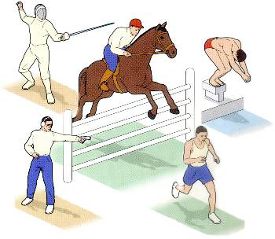
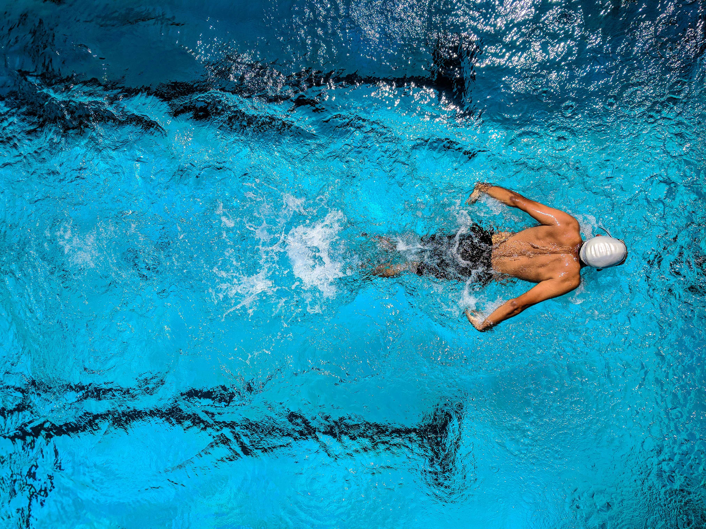
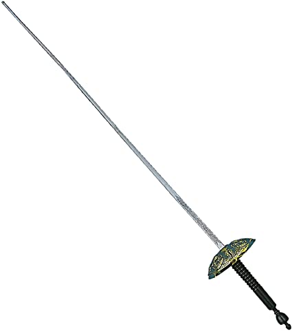

Μοντέρνο Πένταθλο
Tο μοντέρνο πένταθλο είναι ένα σύνθετο ολυμπιακό άθλημα, το οποίο επινόησε ο Γάλλος εμπνευστής των σύγχρονων Ολυμπιάδων βαρόνος Πιέρ ντε Κουμπερτέν. Εντάχθηκε στις Ολυμπιάδες το 1912 στη Στοκχόλμη ως ατομικό αγώνισμα. Από το 1952 στο Ελσίνκι ως το 1992 στη Βαρκελώνη διεξαγόταν και ομαδικό αγώνισμα. Από το 2000 υπάρχει και αγώνισμα γυναικών. Το μοντέρνο πένταθλο είναι συνδυασμός πέντε διαφορετικών αθλημάτων: σκοποβολής, ξιφασκίας, κολύμβησης, ιππασίας και ανώμαλου δρόμου, τα οποία διεξάγονται σε μία ημέρα. Οι αθλητές βαθμολογούνται σε κάθε ένα ξεχωριστά και νικητής αναδεικνύεται όποιος συγκεντρώσει τη μεγαλύτερη βαθμολογία.
Όσοι έχετε χρόνο μπορείτε να δείτε την συνέντευξη του αθλητή Άρη Κόμη στον ραδιοφωνικό σταθμό 98,4 για να μπείτε στον κόσμο το μοντέρνου πεντάθλου, κάνοντας κλικ εδώ.
| Ρεκόρ | Αθλητής | |
|---|---|---|
| Συνολικοί Πόντοι | LESUN Alexander (RUS) |  | Ξιφασκία | LESUN Alexander (RUS) |
| Κολύμβηση 25Μ Πισίνα | James COOKE (GBR) |  |
| Κολύμβηση 50Μ Πισίνα | Logan STORIE (USA) |